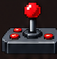
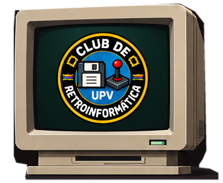
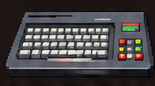
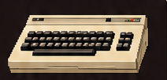
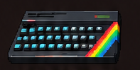
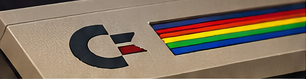
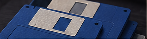
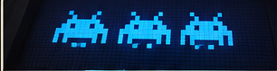

ARCADE
Máquinas y juegos recreativos clásicos.
› LOAD "CLUB"
El Club de la UPV donde conservamos, estudiamos y difundimos la historia de la informática, los ordenadores personales y los videojuegos clásicos, desde los 8 bits hasta la era de los 90.

Una selección de ordenadores, consolas y sistemas que marcaron una época.

Máquinas y juegos recreativos clásicos.

El ordenador personal más popular en España.

Un referente de los ordenadores de 8 bits.

El mítico ordenador creado por Sinclair.
Primeros pasos en programación de 8 bits.
Compite en los grandes clásicos del recreativo.
Limpieza, puesta a punto y conservación.
Las fechas se publicarán cuando estén confirmadas.

Cómo los ordenadores domésticos cambiaron la informática.

Consejos de limpieza, almacenamiento y preservación.

Descubre la historia y la cultura de las máquinas recreativas.
Lecturas introductorias sobre informática clásica.
Hazte socio del Club de Retroinformática UPV y participa en actividades, talleres, restauración y eventos.
ÚNETE AL CLUB